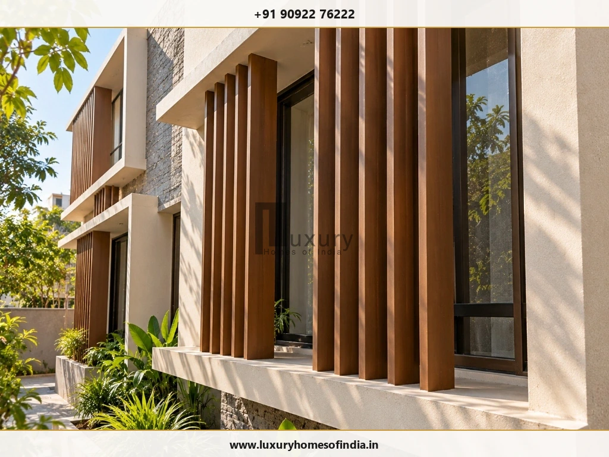
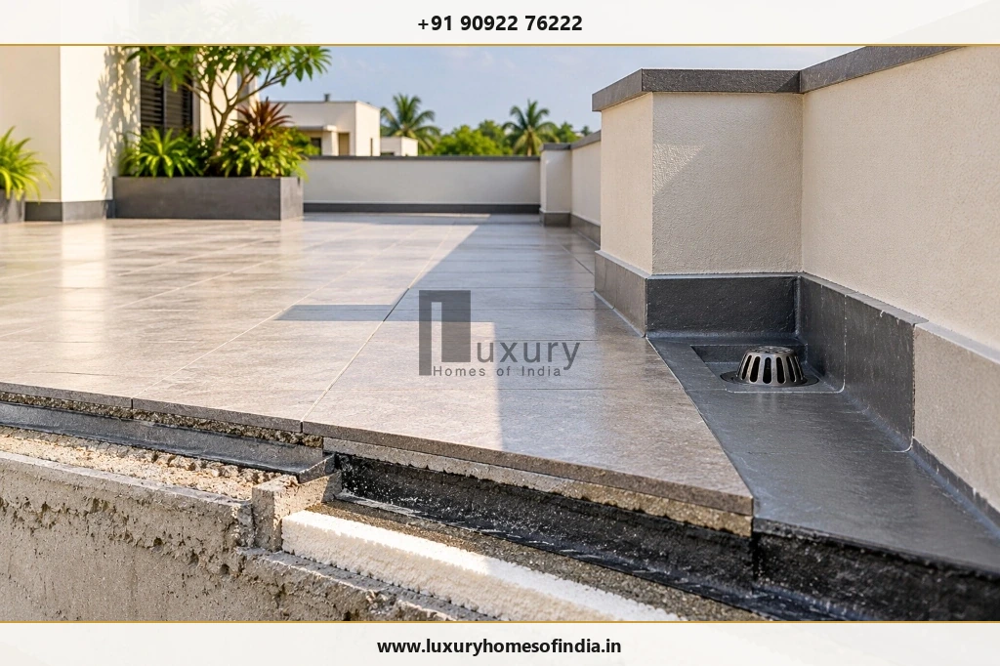
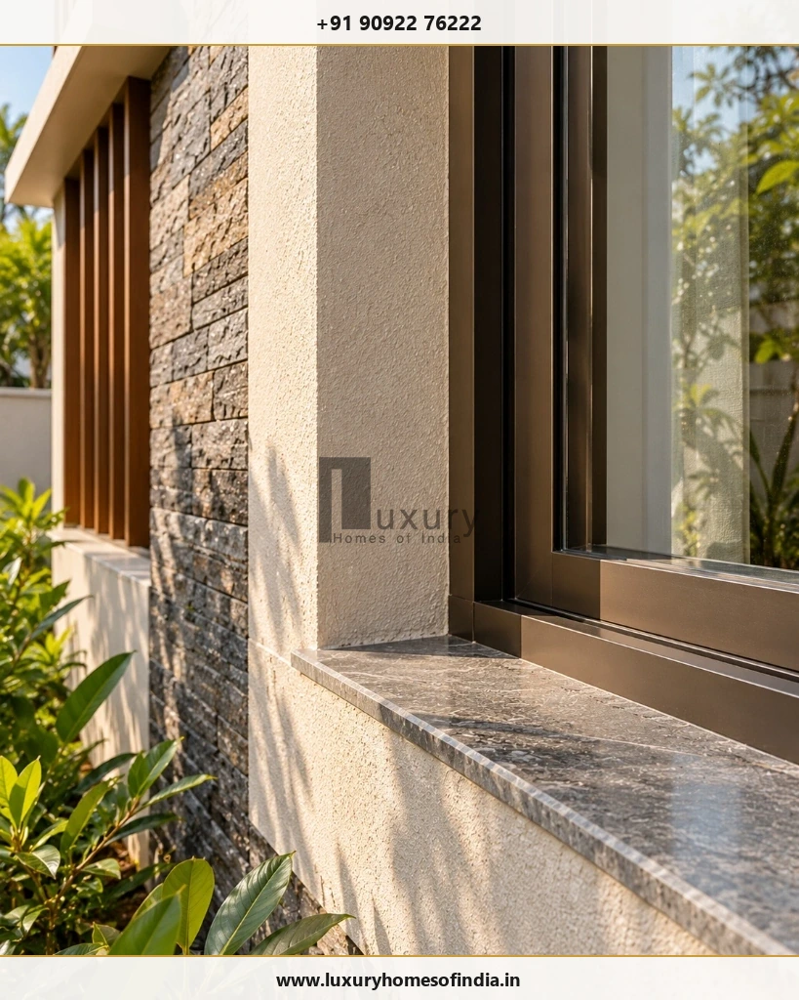
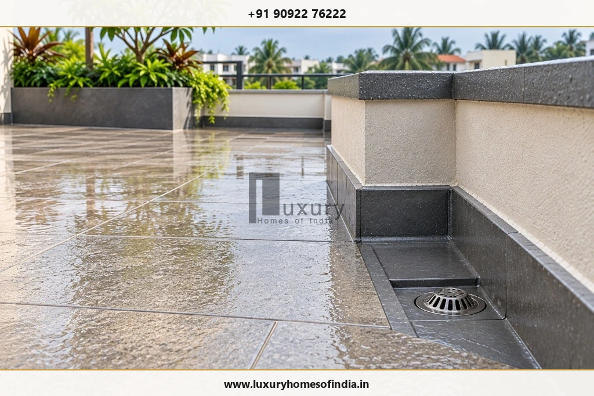

Quick Summary: Designing for Chennai's Coastal Climate
Designing a home for Chennai's tropical climate means balancing solar protection, ventilation, daylight, moisture control, and everyday comfort. A well-planned house responds directly to the plot's orientation, neighbouring buildings, roof sun exposure, seasonal monsoon rainfall, and the family's cooling needs rather than relying on expensive decorative finishes or oversized glass windows alone.
The most effective approach combines external shading to block heat before it strikes the glass, a thermally insulated and properly waterproofed roof, strategic window placement for glare-free daylight, cross-ventilation paths, and maintainable site drainage. Making these decisions during initial architectural planning ensures a home that looks refined, stays naturally cooler, and avoids costly maintenance issues.

Designing a home for Chennai's climate means balancing solar protection, ventilation, daylight, moisture control and everyday comfort. A well-planned house should respond to the plot's orientation, neighbouring buildings, roof exposure, seasonal rainfall and the family's cooling needs rather than relying on expensive finishes or large windows alone.
The most effective approach combines external shading, an appropriately designed roof, carefully positioned windows, useful natural light and reliable rainwater drainage. Cross-ventilation can improve air movement when outdoor conditions are favourable, while fans and air-conditioning may still be necessary during hot and humid periods. Terrace waterproofing, site grading and maintainable drainage details are equally important for long-term performance.
For homeowners planning a new house in Chennai, these decisions should be made during architectural design, before construction details are finalised. The aim is a home that looks refined, functions comfortably, responds to local weather and remains practical to maintain.
1. Understand Chennai's Climate Before Finalising the Design
A climate-responsive home starts with the conditions of its actual site. Heat, humidity, strong sunlight and seasonal rainfall affect the choices made for the building envelope, openings, roof, outdoor spaces and drainage. In Chennai's warm-humid coastal zone (Köppen climate classification Aw), environmental forces operate in distinct ways that require deliberate architectural responses:
Manage Heat and Afternoon Sunlight
Exposed roofs, unshaded glazing and sun-facing walls can contribute significantly to indoor heat gain. In tropical latitudes (~13° N), the summer sun tracks almost directly overhead at midday, while early morning and late afternoon sun rays strike vertical facades at low angles. Review the orientation of each façade and the size of its windows before deciding on finishes or decorative features. Unshaded west and south-west elevations will store thermal energy in brickwork and concrete, reradiating that heat into living spaces well into the late evening.
Account for Humidity
Air movement can improve perceived comfort by speeding up sweat evaporation from the skin. However, warm, humid outdoor air does not always cool a room effectively. When relative humidity exceeds 70–80%—common during Chennai's pre-monsoon and post-monsoon months—natural ventilation must be planned carefully alongside occupancy patterns, security requirements, outdoor air quality, and the intended air-conditioning strategy.
Design for Rainfall
Terraces, balconies, entrances and external walls need suitable water-shedding details. Chennai experiences intense, concentrated cloudbursts during the Northeast Monsoon (October to December), often delivering over 100 mm of rain in a single afternoon. Roof drainage slopes, multi-layer waterproofing, surface levels, plinth elevations, and accessible cleanout outlets should be integral parts of the core architectural design rather than treated as finishing-stage additions.
Consider Coastal Exposure Where Relevant
For properties exposed to coastal air—particularly along the East Coast Road (ECR), Old Mahabalipuram Road (OMR), Besant Nagar, and Adyar—salt-laden marine winds accelerate metal oxidation, concrete carbonation, and paint degradation. Specify suitable marine-grade (SS316) metal fittings, anti-corrosive powder coatings, durable sealants, and scheduled maintenance procedures according to the material and exposure conditions.
Homeowner Takeaway: Integrated Microclimate Design
Ask your architect to review sunlight, airflow, rainwater movement and maintenance access together. Solving these issues as one unified design problem during floor-plan drafting helps prevent costly rework, leaks, and overheating later during construction.
2. Plan Building Orientation and Window Placement Together
There is no single orientation that is best for every Chennai home. Plot geometry, road access, neighbouring buildings, statutory setbacks under Tamil Nadu Combined Development and Building Rules (TNCDBR), privacy, prevailing wind conditions and room layouts all influence the final decision.
West-facing windows deserve particular attention because afternoon sunlight coincides with the hottest ambient temperatures of the day, drastically increasing indoor heat gain. Depending on the façade and room function, possible architectural responses include deep external shading projections, recessed window reveals, low-E performance glazing, cantilevered balconies, or placing non-habitable service spaces (such as staircases, powder rooms, or walk-in closets) along the western perimeter to serve as thermal buffers.
Window placement should also support the intended use of each room:
- Bedrooms: Prioritise privacy, acoustic buffering, soft morning light (east/north-east), and controlled openings that facilitate quiet night cooling without street glare.
- Living & Dining Areas: Benefit from wider garden views, generous indirect daylight, and flexible shading that accommodates daytime entertainment and family gathering.
- Kitchens & Utilities: Demand functional task lighting, dedicated hot-air exhaust paths, and rain-protected ventilation louvers that remain open during sudden coastal showers.
Before Approving Your Floor Plan, Review These 5 Questions:
- Which rooms receive direct morning (east) and harsh afternoon (west) sunlight?
- Where will neighbouring multistory buildings or boundary compound walls obstruct natural airflow?
- Will large wardrobes, entertainment units, or furniture block windows and internal airflow paths?
- Can window shutters, tracks, and insect screens be operated, cleaned, and maintained safely from inside?
- How will the window openings perform during driving monsoon rains when windows must remain cracked for air?
The best solution is the one that balances site constraints, thermal comfort, family privacy, and architectural character.
3. Design for Cross-Ventilation Without Depending on It Alone
Cross-ventilation occurs when air moves through a room or building between suitable openings driven by wind pressure differences. It can significantly improve indoor air movement and flush out accumulated daytime heat when outdoor conditions and wind pressure support the flow.
Practical Design Considerations
- Position Openings for Plausible Airflow Paths: Place intake and discharge openings on opposite or adjacent walls to create a diagonal airflow route that sweeps across occupied seating and sleeping zones.
- Coordinate Doors, Windows, and Partitions: Align internal doorways or incorporate open-slat partitions and louvered transoms so air can circulate across adjacent spaces without hitting dead ends.
- Avoid Unnecessarily Deep Spaces: Deep rooms with only single-sided openings develop stagnant air pockets. Ensure room depths do not exceed 2 to 2.5 times the window head height unless supplementary lightwells or courtyards are introduced.
- Consider High-Level Openings: Clerestory windows or high ventilators exploit natural thermal buoyancy (stack effect), allowing rising hot air to escape near ceiling level while cooler air is drawn in below.
- Choose Appropriate Insect Screens: Magnetic or sliding stainless steel mesh screens protect against mosquitoes while allowing ventilation. Note that fine mesh reduces clear airflow by 30% to 40%, so window sizes should be calibrated accordingly.
- Provide Rain Protection: Install deep chajjas, box frames, or downward-angled louvers so windows can stay open for airflow during heavy monsoon showers without water splashing onto interior sill surfaces.
A house with many windows is not necessarily well ventilated. The location of openings, surrounding plot obstructions, prevailing sea breezes, and internal room layouts matter far more than the total window count.
Can Cross-Ventilation Replace Air-Conditioning?
Not reliably in every season. In Chennai, ambient outdoor temperatures during May and June frequently exceed 38°C to 40°C, and relative humidity often remains above 75%. Under these conditions, natural breeze alone cannot cool an interior below the ambient outdoor wet-bulb temperature.
Ceiling fans improve perceived comfort by creating air movement (typically 0.5 to 1.5 m/s), making the room feel 2°C to 3°C cooler to the skin, but fans do not lower the actual room air temperature. Mechanical cooling and dehumidification remain essential during peak hot and sticky periods.
For air-conditioned rooms, coordinate window joinery with airtight gaskets, multi-point locks, and smart thermostat controls so that expensive conditioned air is not compromised by uncontrolled air leakage when the cooling system is running.
4. Use External Shading to Control Solar Heat Gain
External shading is the most cost-effective passive cooling measure for Chennai homes. Intercepting solar radiation before it strikes window glazing prevents the greenhouse effect inside living rooms. Once sunlight passes through glass and hits interior tiles, curtains, or furniture, the heat is trapped indoors and reradiates into the room.

Choose Shading According to Façade Orientation
- Roof Overhangs and Deep Slabs (Chajjas): Most effective on north and south façades where the midday sun is high in the sky. A 600 mm to 900 mm horizontal projection can completely shade window glass during peak noon hours.
- Vertical Fins: Essential for east and west elevations where morning and late afternoon sunlight arrives at low horizontal angles. Vertical fins block oblique sun rays while preserving front views and natural breeze.
- Balconies and Verandahs: Act as deep buffer zones that keep external walls cool, protect adjoining sliding doors from driving rain, and provide pleasant semi-outdoor transition spaces.
- External Screens (Jaalis & Louvers): Perforated terracotta, GFRC (glass fibre reinforced concrete), or powder-coated aluminum jaalis filter direct glare, soften incoming sunlight, and ensure visual privacy in dense urban neighbourhoods.
- Pergolas & Trellises: Shading rooftop terraces or open courtyards with timber or metal pergolas—optionally trained with bougainvillea or passionflower creepers—dramatically cools the surfaces below.
Shading must be tailored to the actual solar geometry of your site. Oversized projections can darken rooms unnecessarily, reduce useful daylight, complicate rainwater drainage paths, or collect dirt and pigeon droppings.
Luxury Elevation Strategy
In contemporary luxury residences, external shading is not an afterthought tacked onto a flat wall. It is sculpted into the facade geometry—using cantilevered floor slabs, fluted stone fins, and textured timber louvers—so that thermal comfort and high-end visual proportions work together effortlessly.
5. Specify Roof Thermal Performance and Waterproofing Separately
The roof is the single largest collector of solar radiation in an individual house or villa. In Chennai, an unshaded concrete terrace slab can reach surface temperatures exceeding 55°C to 60°C during peak summer months. This intense heat conducts downward through the concrete ceiling slab, making top-floor master bedrooms and family lounges uncomfortably hot and driving up air conditioning electricity bills.

Key Elements of a Climate-Resilient Roof Assembly
- Roof Thermal Insulation: Installing rigid insulation boards—such as 50 mm Extruded Polystyrene (XPS) or Polyisocyanurate (PIR)—above the structural slab drastically restricts heat conduction into the floor below. Material thickness, compressive strength, moisture resistance, and installation sequencing must be coordinated with the complete roof build-up.
- Reflective Roof Finishes (Cool Roofs): Finishing the terrace with high Solar Reflectance Index (SRI > 78) tiles or specialized reflective coatings reflects up to 80% of solar radiation back into the atmosphere. Its performance depends on high-quality manufacturing, proper mortar bedding, and periodic cleaning to prevent algae accumulation.
- Ventilated Roof Spaces: In pitched roof sections or rooftop pergola lounges, a ventilated air cavity allows rising warm air to exhaust continuously, preventing thermal bridging into ceiling surfaces.
- Terrace Waterproofing System: A flat terrace requires a robust waterproofing barrier (such as multi-layer polyurethane or polymer-modified elastomeric membranes), generous drainage falls (minimum 1:80 to 1:100), smoothly rounded 45° angle fillets (coving) at all parapet junctions, and cleanable drainage scuppers.
Critical Distinction: Insulation vs. Waterproofing
Thermal insulation and waterproofing perform entirely different engineering functions. Never assume that a waterproofing chemical provides adequate thermal insulation, or that an insulation board prevents water leaks. Both layers must be independently specified, detailed, and tested (including mandatory 72-hour terrace flood testing) during construction.
For technical standards and compliance context, consult the Bureau of Energy Efficiency's Eco-Niwas Samhita residential energy guidelines. Specific thermal transmittance (U-value) targets should be confirmed with the structural and MEP engineers on your project.
6. Choose Wall Materials, Glazing and Finishes as a System
Wall construction, window framing, architectural glazing, external shading, and surface coatings work together as an integrated building envelope. Selecting materials in isolation—such as buying high-end windows but installing them in poorly insulated single-brick walls—leads to disappointing thermal performance and persistent maintenance headaches.

Evaluate Exterior Walls for Thermal Mass and Moisture Resistance
In Chennai's coastal environment, wall construction must resist both thermal heat transfer and wind-driven rain penetration. Autoclaved Aerated Concrete (AAC) blocks and hollow clay bricks provide superior thermal insulation (lower thermal conductivity) compared to conventional dense concrete blocks or country bricks. For west-facing master bedrooms, cavity wall construction (two masonry skins separated by an insulated air gap) provides the highest thermal protection.
Specify Glazing for Its Exact Orientation and Purpose
Window selection requires balancing Visible Light Transmittance (VLT), Solar Heat Gain Coefficient (SHGC), and U-value:
- North Windows: Can utilize clear glass with high VLT (> 60%) to maximise daylight, as direct solar heat gain is minimal.
- West and South Windows: Require high-performance low-E glass with a low SHGC (≤ 0.25 to 0.35) or double-glazed units (DGU) with an argon-filled cavity to block infrared heat radiation while allowing pleasant daylight through.
- Acoustic & Wind Seals: Heavy aluminium or premium uPVC window systems with EPDM weatherstripping and multi-point locking mechanisms ensure airtightness against coastal storms and city traffic noise.
Match Exterior Finishes to Tropical Exposure
Exterior paints and textures must withstand intense ultraviolet (UV) radiation, severe humidity, and salt spray. Silicone-enhanced acrylic exterior emulsions, hydrophobic elastomeric wall coatings, and breathable primers prevent peeling, fungal staining, and efflorescence.
As illustrated in the detail above, all horizontal exterior surfaces—such as window sills, parapet copings, and sunshades—must feature continuous bottom drip grooves (throating). Without a drip groove, rainwater running off the sill will track back along the underside and run down the wall, causing unsightly dark dirt streaks and moisture seepage.
7. Bring in Daylight Without Creating Glare
Natural daylight enhances health, elevates mood, and illuminates architectural finishes beautifully. However, in Chennai's tropical climate, daylight is accompanied by immense solar heat and intense outdoor brightness. An excessively bright room with raw, unfiltered sunbeams creates uncomfortable visual glare on computer monitors, televisions, and polished floorings, forcing residents to draw thick curtains and turn on electric lights.
Proven Strategies for Balanced, Glare-Free Daylight
- Locate Windows Where People Live and Work: Focus natural light onto study desks, kitchen preparation counters, and reading alcoves rather than throwing harsh glare across entertainment screens or bed pillows.
- Utilise Indirect Reflected Light: Use deep window reveals, light-coloured ceiling light shelves, or external louvers that bounce daylight upward against matte white ceilings, illuminating rooms deeply and evenly.
- Select Low-Sheen Interior Finishes: Matte, eggshell, or satin interior wall paints diffuse reflected daylight softly. High-gloss wall finishes amplify glare and create fatiguing reflections.
- Incorporate High-Level Clerestory Ribbon Windows: Placed just below ceiling level, clerestories deliver soft skylight deep into living and dining zones while maintaining complete visual privacy from neighbouring properties.
- Carefully Evaluate Skylights: Horizontal roof skylights in Chennai receive relentless solar exposure throughout the day. If a skylight is desired for a central stairwell, specify tinted double-glazed low-E glass, external louvered shading, robust waterproof upstand curbs (minimum 200 mm above roof level), and safe maintenance access for regular cleaning.
8. Use Courtyards, Verandahs and Landscaping Strategically
Traditional South Indian architecture has long embraced courtyards, covered verandahs, and lush green courtyards to temper tropical heat. When integrated thoughtfully into contemporary home plans, these spatial elements bring soul, daylight, and passive microclimate cooling to luxury residences.
Courtyards (The Modern Mutram)
A central courtyard introduces natural light into internal corridors and creates a serene connection with nature. From a physics perspective, a courtyard acts as a thermal chimney (stack effect): as sun warms the air inside the courtyard shaft, the air rises and discharges, drawing cooler air through shaded ground-floor rooms.
However, a courtyard must be designed as part of a complete system. In tight urban plots, an unshaded, poorly drained courtyard can trap hot stagnant air or flood during monsoons. Ensure internal courtyards include overhead horizontal shading louvers, perimeter drainage trenches with dual overflow pipes, and mosquito-mesh sliding screens.
Verandahs (The Covered Thinnai)
Deep covered verandahs and wrap-around porches create essential transition zones between hot outdoor gardens and cool air-conditioned interiors. A wide verandah protects large glass sliding doors from direct sun and driving monsoon rain, allowing doors to stay open for breezy evening relaxation.
Microclimate Landscaping
Strategic planting around the building footprint cools ambient outdoor air through evapotranspiration:
- Canopy Trees on South-West Corners: Plant broad-leaf native trees (such as Neem, Indian Beech, or Gulmohar) along south-western and western boundaries to shade walls from harsh afternoon sun.
- Protect Foundations: Position large trees well away from structural footings and underground water sumps to avoid foundation heave or pipe damage from invasive root systems.
- Avoid Persistent Wall Dampness: Keep dense shrubbery and lawn sprinklers at least 600 mm to 900 mm away from exterior plinth walls to prevent dampness migration into masonry.
- Permeable Ground Finishes: Avoid paving entire setbacks with solid unshaded concrete tiles. Use grass pavers, gravel, or shaded granite flagstones to allow rainwater percolation and prevent radiant heat islands around the ground floor.
9. Plan Rainwater Drainage and Moisture Protection Early
Managing seasonal rainfall is just as critical as managing summer heat in Chennai. Between October and December, the Northeast Monsoon brings intense downpours that test every roof joint, window seal, and stormwater pipe. A climate-responsive home must shed water efficiently, prevent ground flooding, and harvest precious rainwater into groundwater aquifers.

Terrace and Roof Drainage Engineering
- Adequate Surface Slope: Ensure finished terrace tiles maintain a minimum fall of 1 in 80 (or 1 in 100) toward drainage troughs, preventing water ponding that degrades tile joints over time.
- Correct Downpipe Sizing: Size rainwater downpipes based on Chennai's peak hourly rainfall intensity (minimum 75 mm/hr design standard). For large terrace areas, use 110 mm or 160 mm heavy-duty UV-stabilised uPVC downpipes rather than undersized domestic pipes.
- Parapet Detailing & Coving: Extend waterproofing membranes at least 300 mm up parapet walls and terminate them into an architectural reglet groove, capped with a stone flashing strip.
- Overflow Scuppers: Install secondary emergency overflow scuppers through the parapet wall 50 mm above finished floor level. If a primary drain grating gets clogged by leaves during a storm, overflow scuppers allow water to discharge safely rather than flooding into stairwell doors.
- Accessible Domed Strainers: Use heavy-duty stainless steel or cast-iron domed leaf guards that keep debris out while allowing swift water flow.
Site Grading and Plinth Elevations
Always establish the ground-floor finished plinth level (FFL) at least 600 mm to 900 mm above the crown of the adjoining municipal road. Roads in Chennai are frequently resurfaced over time without milling, steadily raising road heights relative to abutting plots. The surrounding driveway and garden paving must slope smoothly away from the building towards boundary storm drains.
Underground Drainage and Rainwater Harvesting (RWH)
A comprehensive rainwater management strategy coordinates roof collection, multi-stage filtration chambers (with gravel, sand, and activated carbon layers), rooftop runoff storage in dedicated masonry sumps, and overflow recharge into deep recharge borewells. Complying with Chennai Metro Water RWH mandates not only recharges the local water table but also secures a sustainable freshwater supply for your family.
10. Choose Flooring for Comfort, Safety and Maintenance
Flooring materials in a Chennai residence must endure high humidity, occasional fine coastal dust, frequent wet mopping, and constant temperature variations. Vitrified tiles, natural granite, and imported Italian marble each offer distinct advantages, but their suitability depends on room function, surface finish, and installation detailing:
- Vitrified Tiles: Offer near-zero water absorption (< 0.05%), exceptional scratch resistance, and effortless maintenance. Large-format glazed vitrified tiles (GVT) with satin or matte finishes work brilliantly for living rooms, bedrooms, and upper family lounges.
- Natural Granite: Extremely hard, moisture-resistant, and durable. Flamed, leathered, or lapato-finish granite is the premier choice for outdoor verandahs, porticos, terrace walkways, and staircase treads where wet slip resistance is essential.
- Imported Marble: Provides unmatched luxury, visual elegance, and a cool sensation underfoot. However, marble is porous and sensitive to acidic spills and humidity. It requires high-grade penetrating sealers and specialized maintenance, making it best suited for formal indoor living and dining zones.
For bathrooms, utility balconies, and entrance steps, never sacrifice slip safety for a high-gloss finish. Specify anti-skid tiles or honed stone with an verified R-10 or R-11 slip rating. For a comprehensive deep-dive into material properties and cost comparisons, explore our guide to luxury flooring and Italian marble design.
11. Coordinate Cooling, Ventilation and Electrical Planning
Passive architectural design reduces unnecessary heat gain, but active mechanical cooling remains indispensable for ultimate comfort in Chennai's humid climate. True comfort is achieved when architectural concepts and building services (Mechanical, Electrical, and Plumbing—MEP) are coordinated from the very first draft.
Best Practices for HVAC and Electrical Services
- Size Cooling on Accurate Heat Loads: Air conditioning capacity should be engineered using room-by-room heat load calculations (accounting for wall U-values, glass area, orientation, ceiling height, and peak occupancy) rather than arbitrary square-foot formulas. Oversized air conditioners cool the room too quickly without dehumidifying, leaving the air cold and clammy.
- Inverter Technology & BLDC Fans: Pair variable-speed inverter air conditioners with high-efficiency Brushless DC (BLDC) ceiling fans. Running a quiet ceiling fan at low speed circulates cooled air evenly, allowing you to set the AC thermostat at 24°C–26°C while enjoying the comfort of 22°C, cutting cooling power bills by 20% to 30%.
- Early Conduit and Drain Routing: Pre-plan all refrigerant copper piping, insulated condensate drain pipes, and electrical distribution lines within dedicated wall chases or service shafts during RCC slab casting. Chipping finished walls or punching core holes through structural beams after plastering damages waterproofing and compromises aesthetics.
- Rooftop Solar PV Planning: If rooftop solar power is planned, ensure structural engineers account for the dead load and wind uplift forces of panel mounting frames. Position solar arrays where they will not be shaded by overhead water tanks or lift machine rooms, and ensure easy, safe perimeter access for panel washing.
12. Room-by-Room Design Checklist
Review your floor plan room by room before signing off on architectural working drawings. A well-placed window or vent will fail if obstructed by wardrobes or exposed to driving monsoon storms:
| Area / Room | Key Climate-Responsive Design Priorities |
|---|---|
| Living Room | Balanced glare-free daylight from north/east, external overhangs, diagonal cross-ventilation, and coordinated furniture layouts that keep airflow corridors clear. |
| Bedrooms | Visual privacy, shaded fenestration, insulated western walls, quiet inverter cooling, and mosquito-screened windows for peaceful night ventilation. |
| Kitchen | Dedicated high-capacity chimney exhaust ducts, cross-ventilation to remove cooking fumes, rain-protected louvers, and functional task daylight over worktops. |
| Bathrooms | Continuous moisture exhaust, anti-fungal waterproof wall finishes, anti-skid floor tiles (R-10+), and natural ventilation shafts that prevent odor stagnation. |
| Staircase Core | High-level operable clerestories or shaded skylights that stimulate thermal stack ventilation, illuminating circulation corridors safely without direct solar glare. |
| Terrace Roof | Rigid thermal insulation (XPS/PIR), high-SRI reflective cool tiles, elastomeric waterproofing, minimum 1:80 drainage slope, and emergency overflow scuppers. |
| Balconies | Deep cantilevered projections for rain shading, non-slip textured granite/flamed tiles, recessed drainage troughs, and safety railings with corrosion-resistant fittings. |
| Utility / Wash Area | Ample airflow for rapid clothes drying during humid weather, accessible plumbing cleanouts, and dedicated washing machine drainage traps. |
| Home Office / Study | Diffused indirect northern daylight, strict glare control on computer screens, acoustic insulation, and independent high-efficiency cooling controls. |
13. How Much Does Climate-Responsive Home Design Cost?
There is no single fixed surcharge for climate-responsive design. In fact, many of the most effective measures—such as orienting rooms strategically, aligning doors and windows for cross-ventilation, and sizing overhangs correctly—cost nothing extra when addressed during initial conceptual planning.
Where specialized high-performance materials are required, they deliver significant lifecycle savings by slashing monthly electricity bills and preventing costly leak repairs. The primary investment categories include:
| Climate-Responsive Measure | Indicative Budget Impact | Primary Return on Investment (ROI) |
|---|---|---|
| Architectural Shading (Fins & Cantilevers) | Moderate (integrated into structural framing & elevation) | Eliminates direct solar heat gain; protects exterior joinery and window seals. |
| Roof Thermal Insulation & Cool Tiles | ₹120 – ₹250 per sq. ft. of terrace slab area | Lowers top-floor ceiling temperatures by 4°C–6°C; cuts HVAC load by 25%. |
| High-Performance Low-E / DGU Glazing | 15% – 30% premium over standard single glass | Drastically reduces heat transfer and glare while delivering superior acoustic isolation. |
| Multi-Layer Terrace Waterproofing | ₹90 – ₹180 per sq. ft. including coving & testing | Prevents ceiling dampness, rebar corrosion, and costly interior re-painting. |
| Rainwater Harvesting & Recharge Wells | ₹75,000 – ₹2,50,000 depending on sump capacity | Secures self-sufficient groundwater reserves and satisfies municipal mandates. |
When evaluating options with your architect and builder, compare upfront material costs against long-term maintenance requirements, energy performance ratings, and realistic durability in Chennai's humid coastal climate.
14. Common Home Design Mistakes to Avoid in Chennai
Building a luxury residence in Chennai requires learning from common architectural pitfalls. Avoiding these ten frequent oversights will protect your budget, comfort, and peace of mind:
10 Critical Climate Mistakes to Avoid:
- Finalising Floor Plans Before Orientation Studies: Freezing room layouts before analysing sun angles, surrounding obstructions, and wind directions.
- Oversized Unshaded Glazing: Installing vast expanses of single-pane clear glass on west or south elevations without external architectural shading.
- Assuming Natural Breeze Can Always Replace AC: Relying exclusively on cross-ventilation during humid May heatwaves without planning high-efficiency cooling.
- Confusing Waterproofing with Thermal Insulation: Expecting a thin waterproofing chemical to keep upper bedrooms cool, or expecting insulation boards to stop water leaks.
- Installing Skylights Without Heat and Glare Protection: Creating horizontal roof glass openings that turn interior stairwells into sweltering solar ovens.
- Neglecting Terrace Drainage Maintenance: Omitting overflow scuppers or designing inaccessible gutters that choke with leaves during monsoon storms.
- Selecting Wall Finishes by Aesthetics Alone: Using paints or plasters without testing their UV durability, moisture resistance, and anti-fungal properties.
- Paving Entire Setbacks with Solid Concrete: Creating a radiant heat sink around the home that traps summer heat and prevents rainwater percolation.
- Failing to Coordinate Architectural and MEP Services: Core-cutting finished concrete slabs or running exposed piping because AC routes were not pre-planned.
- Assuming Courtyards or Cool Paint Guarantee Comfort: Believing a single feature will magically cool a home without engineering the complete envelope as a unified system.
15. Final Planning Checklist
Before signing off on final architectural drawings and commencing structural excavation, review these thirteen critical climate-readiness checkpoints with your design and engineering team:
- Plot Orientation & Obstructions: Microclimate sun angles, wind paths, and neighbouring building shadows verified.
- Solar Shading Geometry: Cantilevered chajjas, balconies, and vertical fins specified for east, south, and west windows.
- Window-to-Furniture Coordination: Fenestration coordinated with internal furniture layouts, privacy, and airflow paths.
- Cross-Ventilation Strategy: Operable intake and relief openings aligned to harness prevailing summer sea breezes.
- Separate Roof Assembly Details: Rigid thermal insulation boards and multi-layer waterproofing specified independently.
- Wall & Glazing System: Thermal mass of masonry, low-E/DGU glass properties (SHGC/VLT), and window gaskets coordinated.
- Terrace Slopes & Drainage: Minimum 1:80 falls, oversized downpipes, parapet coving, and overflow scuppers detailed.
- Site Grading & Plinth Elevation: Finished plinth established 600 mm–900 mm above road level, sloping away from foundations.
- Wet-Area Slip Resistance: Anti-skid stone and tile finishes (R-10/R-11) specified for bathrooms, balconies, and entries.
- HVAC & MEP Integration: Air conditioning heat-load calculations completed, and copper pipe routes pre-planned in shafts.
- Strategic Landscaping: Canopy shade trees located on south-west boundaries without compromising structural footings.
- Solar PV & Service Maintenance: Unshaded rooftop solar positions and secure service access walkways planned.
- Statutory Regulatory Approvals: TNCDBR setback rules, FAR/FSI calculations, and CMDA/DTCP building permit clearances confirmed.
Frequently Asked Questions
Design a Home Around Its Site and Climate
A comfortable Chennai home begins with a design that responds to its actual site. Orientation, shading, roof thermal performance, ventilation, daylight, and rainwater management should work together as an integrated system rather than being treated as separate finishing choices.
Early coordination between architecture, structure, interiors, and building services identifies potential conflicts before construction starts. The objective is a home that is visually considered, comfortable to occupy, and practical to maintain over decades.
Written by: LHI Editorial Team
Technical Review: Architectural Design & Building Envelope Engineering Division, LHI
Disclaimer: Building orientation, window dimensions, roof insulation assemblies, and drainage falls must be verified against actual plot coordinates, microclimate conditions, and municipal building regulations (TNCDBR / NBC 2016) by a licensed architect or MEP engineer before construction commences.